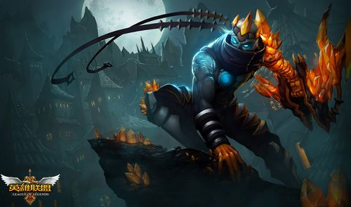

韦鲁斯被一间神圣的艾欧尼亚寺院选作守望者。这个寺院是为了镇压一个远古的腐败深渊而建。这个深渊是那么地令人不安，以至于艾欧尼亚的长老们害怕它将整个岛屿都笼罩在黑暗之中。韦鲁斯对他的职位相当自豪。
韦鲁斯的优点 韦鲁斯是技能很强射程很远的ADC，他有远射程的骚扰技能，普通攻击能附加魔法伤害，并且还能造成根据最大生命值计算的伤害，和降低治疗效果。因为他的技能需要瞄准所以比较难用，但是使用得当的话他确实是目前游戏里最强的ADC。
韦鲁斯的缺点 其初始生命值及护甲极低，同时也没有任何位移及防御性技能，因此，他是一位其它能力相当优秀，却严重缺乏生存能力的英雄。
Click here to find more hero information
Click here to the home page of LOL
Click here to the home page